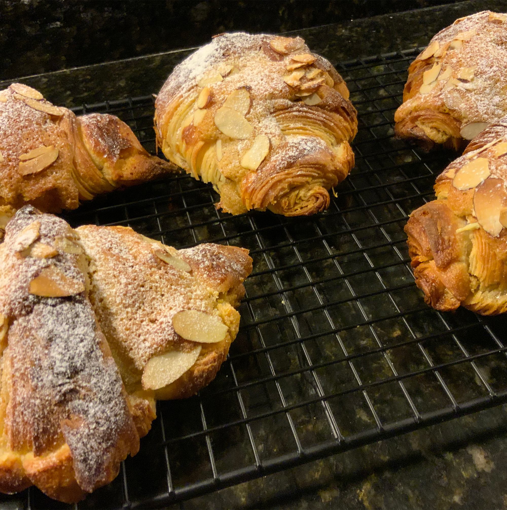
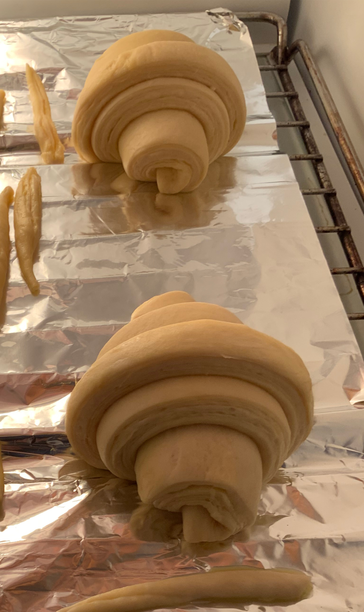
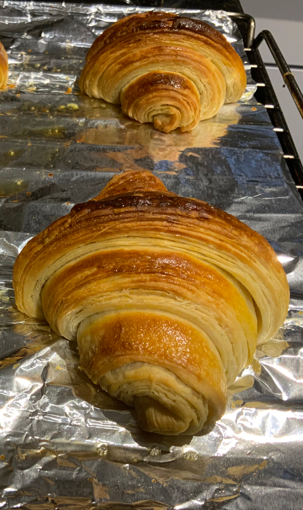
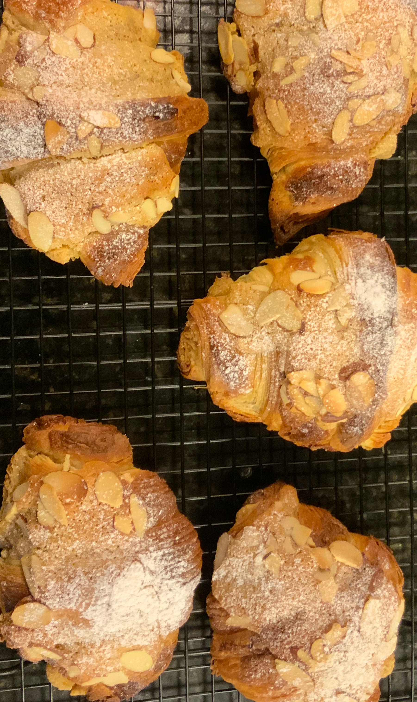

Baking "Practice makes the master" - Patrick Rothfuss
Baking is a great hobby, it is a great way to show your love and gratitude to loved ones. Every time I bake I make sure I send out to friends and family part of the batch. Who wouldn’t love receiving fresh baked goods? I assure this activity is making people happy. Having great fresh from the oven cinnamon rolls, brioche, croissants, cookies or bagels is a pleasure that is worthy of the time baking consumes.
 Moreover, baking is a therapeutic activity, it is a continuous learning experience, a boost for creativity … and patience. Baking definitely requires time but as the header stated, “practice makes the master”, with time baking will become easier and the large amounts of time will be reduced. At least, the time to let products rise, proof or cool could be used in different activities. Enjoy the process!Moreover, baking is a therapeutic activity, it is a continuous learning experience, a boost for creativity … and patience. Baking definitely requires time but as the header stated, “practice makes the master”, with time baking will become easier and the large amounts of time will be reduced. At least, the time to let products rise, proof or cool could be used in different activities. Enjoy the process!
The possibility of making little but increasingly delicious contributions or modifications to the recipes allow infinite possibilities. The final product will undoubtedly make you feel proud and the best part of it all is you will eat amazing tasty goods. Baking is almost magic, getting to create beautiful and delicious products out of flour, eggs and butter never ceases to amaze me.


